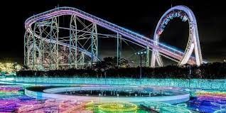
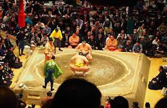

О городе
Токио-столица Японии
Столица и крупнейший город Японии, её административный, финансовый, промышленный и политический центр.
Токио в цифрах
- Население: чуть более 144 000 человек
- Часовой пояс: UTC+9 зимой и UTC+9 летом
- Зоны для катания: 9 штук, все связаны между собой транспортным сообщением
- Перепад высот: 860 метров — 3100 метров
- Продолжительность сезона: с 12 месяца (декабрь) по 4 месяц (апрель) включительно
- Возраст посетителей всех зон: с 2 лет и старше, без ограничений.
Любишь аниме?
Тебе дорога в Токио!
Cайт ТокиоТеипература по месяцам
Галерея
Впрочем кроме аниме тут много чего интересного
Экстримальные японские гонки


Эпичные бои сумо
Эстетичные замки японской культуры
Карта Токио
Благодоря удобному местоположению вы можете добраться до токи на летающем яндекс такси
| Вид транспорта | Из Москвы | Из Питера | Из Африки |
|---|---|---|---|
| Cамолет | + | + | + |
| Поезд | - | - | - |
| Машина | - | - | - |
| Автобус | - | - | - |
| Яндекс такси | + | + | + |